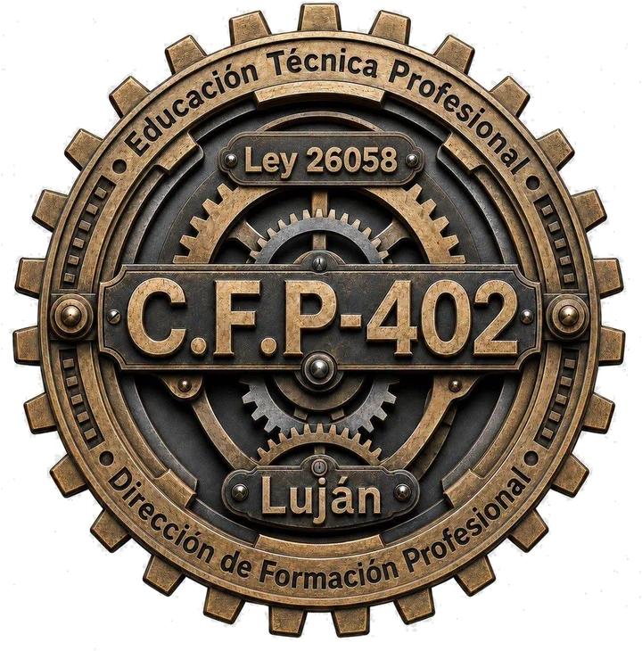

No encontramos proyectos con esa búsqueda.

CFP N.º 402 · Luján
Centro de Formación Profesional
Expo 2026
Operador/a en Herramientas de Marketing y Venta Digital
Producciones finales de la cursada: cada trabajo tiene identidad, estrategia y una marca propia detrás. Elegí uno y miralo completo, tal como lo entregó su autor.
No encontramos proyectos con esa búsqueda.
El curso
Todo lo que viste arriba se enseña en el curso de Operador/a en Herramientas de Marketing y Venta Digital: 27 encuentros donde cada estudiante trabaja con su propio emprendimiento como caso real.
Para quién es
Perfil profesional
Interviene en la ejecución de estrategias de promoción de productos y servicios con herramientas, plataformas y portales digitales.
Requisito: primario o equivalente aprobado. Sin experiencia previa en tecnología.
Qué es el marketing y para qué sirve en un negocio chico. Identidad de marca, propuesta de valor y cliente ideal.
Instagram y Facebook desde cero: perfil de negocio, diseño en Canva, calendario, reels, historias y hashtags.
Google, Perfil de Empresa y Maps para que te encuentren en tu zona. WhatsApp Business con catálogo y respuestas automáticas.
Meta Ads y Google Ads con presupuesto chico y segmentación por zona. Métricas, catálogo digital y página de venta.
Armás tu plan de marketing completo, lo presentás y te llevás el certificado de capacitación.
Costo
Gratuito
Solo se abona la cuota de la cooperadora.
Certificación
Certificado
De capacitación, al terminar la cursada.
Duración
27 encuentros
Con práctica en cada clase.
Sede y horario
A confirmar
Se anuncian en el Instagram del CFP.